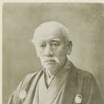

"Let the good times roll."
History

The company is named after its founder Shōzō Kawasaki, and has dual headquarters in Chūō-ku, Kobe and Minato, Tokyo.Kawasaki Aircraft initially manufactured motorcycles under the Meguro name, having bought an ailing motorcycle manufacturer, Meguro Manufacturing with whom they had been in partnership. This eventually became Kawasaki Motor Sales. Some early motorcycles display an emblem with "Kawasaki Aircraft" on the fuel tank.During 1962, Kawasaki engineers were developing a four-stroke engine for small cars. Then some of the engineers transferred to the Meguro factory to work on the Meguro K1 and the SG, a single cylinder 250 cc OHV. In 1963, Kawasaki and Meguro merged to form Kawasaki Motorcycle Co.,Ltd. Kawasaki motorcycles from 1962 through 1967 used an emblem which can be described as a flag within a wing.Work continued on the Meguro K1, a copy of the BSA A7 500 cc vertical twin and on the Kawasaki W1. The K2 was exported to the U.S. for a test in response to the expanding American market for four-stroke motorcycles. At first it was rejected for a lack of power. By the mid-1960s, Kawasaki was finally exporting a moderate number of motorcycles. The Kawasaki H1 Mach III in 1968, along with several enduro-styled motorcycles to compete with Yamaha, Suzuki and Honda, increased sales of Kawasaki units.Kawasaki’s engines division, housed in a single office complex in Grand Rapids, Michigan, consolidates research and development projects for engines.
Racing history
Kawasaki's traditional racing colour is green. Many Kawasaki racing teams are called Team Green. The "Monster Energy Kawasaki Team Green™" provides a support program developing amateur motocross racers.
Kawasaki's first title was with Dave Simmonds in 1969 when they won the 125 cc World Championship. Kawasaki dominated the 250 cc and 350 cc grand prix classes from 1978 to 1982 winning four titles in each category.
With the introduction of the four-stroke engines into MotoGP in 2002, Kawasaki decided to take part in the new MotoGP World Championship. Kawasaki entered the championship in 2003 with 250 cc Grand Prix racer Harald Eckl's Team Eckl.
In 2003, the Kawasaki Racing Team was formed after Kawasaki had developed their new 990cc ZX-RR bike throughout 2002 and raced it in the last three races of the 2002 MotoGP season. The racing activities were managed by Harald Eckl's team based in Germany. It wasn't until 2004 that Kawasaki had two riders - Alex Hofmann and Shinya Nakano, who raced for the entire season. Nakano placed 3rd in Japan that year achieving Kawasaki's first podium finish in MotoGP.In 2007, Kawasaki split from Harald Eckl because of Eckl’s involvement with a competitor's MotoGP activities, which forced Kawasaki to terminate the relationship immediately. Kawasaki formed Kawasaki Motors Racing, a European subsidiary of Kawasaki Heavy Industries responsible for managing the racing activities of the MotoGP team and any other motorcycle racing activities Kawasaki may enter in the future. For the first time since Kawasaki returned to the premier class of motorcycle racing, the team became a complete ‘in house’ factory team.On January 9, 2009, Kawasaki announced it had decided to "... suspend its MotoGP racing activities from 2009 season onward and reallocate management resources more efficiently". The company stated that it will continue racing activities using mass-produced motorcycles as well as supporting general race oriented consumers.
The world's fastest
The Kawasaki Ninja H2 is a "supercharged supersport" class motorcycle in the Ninja sportbike series, manufactured by Kawasaki Heavy Industries, featuring a variable-speed centrifugal-type supercharger.The track-only variant is called Ninja H2R and produces maximum of 310 horsepower (230 kW) and 326 horsepower (243 kW) with ram air,is the most powerful and fastest production motorcycle on the market. The H2R has 50% more power than the fastest street-legal motorcycles, while the street-legal Ninja H2 has a lower power output of 200 hp (150 kW) 210 hp (160 kW) with ram air.In June 2015, TT race competitor James Hillier rode a Kawasaki H2R as an inter-race demonstration lap at on regular Superbike slick race tires around the 37-mile road course, leading to a roads TT record of the highest top speed attained in the Isle of Man by a motorcycle. The top speed of "over 206 mph" (332 km/h) on the Sulby Straight was recorded on Hillier's personal Strava GPS smartphone app for cyclists.On June 30, 2016, Kenan Sofuoglu, the most successful five-time world champion Supersport circuit-racer, made a top speed attempt. Sofuoglu, sponsored by Kawasaki, was supplied with a stock H2R, other than special-formula rubber tires developed by Pirelli for the top speed attempt to withstand extreme high speeds, and the bike was supplied with race-grade fuel. Sofuoglu was supplied with a special one-piece leather suit by Rev'It! to enhance aerodynamics for his record attempt.This attempt endorsed by the Turkish president, was made across the newly completed Osman Gazi Bridge, the fourth longest in the world at just over a mile and a half. Kawasaki quoted that the H2R maximum speed to be 380 kilometres per hour (240 mph).After training and preparing for four months, Sofuoglu went 400 kilometres per hour (250 mph) in just 26 seconds with a video recording the bike's dashboard display.
The attempt was not confirmed with any chronometers or GPS or radar, just recorded by the bike's on-board computer, and later with a theoretical calculation, of the distance he traveled in 26 seconds on the 8,799-foot-long (2,682 m) bridge. Cycle World's Kevin Cameron had calculated two years earlier that with the right gearing, the H2R's engine power could theoretically overcome aerodynamic drag up to 250–260 miles per hour (400–420 km/h).
Last model specifications:Kawasaki h2r 2018